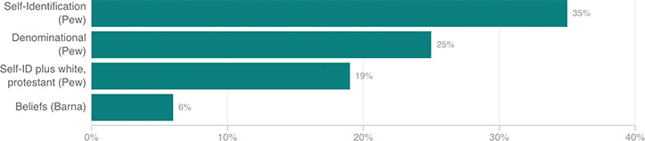

How Many Evangelicals Are There?
Definitions of “evangelical” vary from survey to survey. Some ask people to self-identify — that is, they ask if people identify as “evangelical” or “born-again,” while others factor in race. Denominations and beliefs are also sometimes used to determine who fits under this label.
Share of U.S. adults who are evangelicals, depending on how the term is defined
